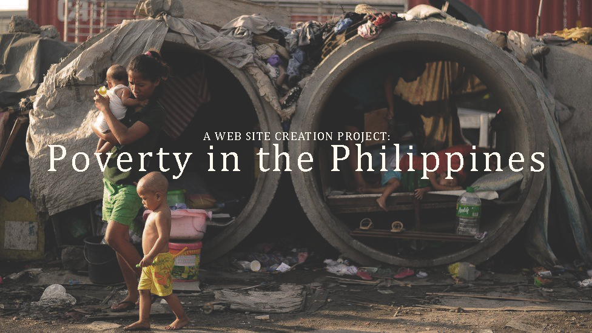

The Philippines is a country located in Southeast Asia comprised of more than 7,000 islands. Poverty has proven to be one of the most significant challenges facing this country and its citizens. Filipinos are having a hard time surviving in such difficult conditions, and more and more are falling into extreme poverty.
According to the Asian Development Bank, the major causes of poverty include: low economic growth, a weak agricultural sector, increased population rates and a high volume of inequality. Because of these factors, there are a lot of effects of poverty in the Philippines that make it difficult for people to live in such circumstances.
Data indicates that 16.6% of the population of the Philippines, or about 17.6 million people, live under the poverty line. Those who reside in rural areas have a much higher chance of experiencing poverty, with nearly one-third of those under the poverty line working as farmers.
The Philippines is exposed to more natural disasters than any other nation in the world. These disasters, which include typhoons, earthquakes and cyclones, cause horrific devastation and contribute heavily to the high poverty rate in this country. Other causes of poverty in the Philippines include low job creation, low economic growth and high levels of population growth.
For every 1,000 babies born in the Philippines, 28 die before they turn 5 years old. Many of these children die of pneumonia. The Philippines is one of the 15 countries that make up over 75% of the pneumonia deaths globally. A lower socioeconomic status, which often leads to limited access to vaccinations and healthcare options, contributes to this high rate of pneumonia.
As of 2019, an estimated 64% of Filipino households struggle with food insecurity, and two in every 10 children under the age of 5 are underweight. The high rates of natural disasters and large numbers of people living in rural areas contribute to this hunger problem and make food inaccessible for many in the Philippines.
The COVID-19 crisis has affected all aspects of life in the Philippines but especially food access. A study done in May of 2020 showed that 4.2 million families reported struggling with involuntary hunger, doubling since December 2019. This is likely due to the economic devastation and financial issues that many countries around the world have struggled with since the pandemic.
The Filipino Government has launched its Philippines Development Plan in an effort to combat poverty and hunger and ramp up job creation in the country. This plan was initiated in 2011 and updated in 2017 and has reported remarkable success in job creation, education and poverty reduction.
Various Filipino NGOs as well as some from outside of the country, have worked to combat poverty in the Philippines. A group called Zero Extreme Poverty PH 2030 (ZEP) has led the charge, dedicating itself to eliminating poverty in the nation by 2030 by enacting positive change in eight areas: education, environment, health, housing and shelter, livelihoods, peace and human security and social justice. In 2018, ZEP created a coalition of various NGOs from both the Philippines and around the world, with the goal of helping those living under the poverty line in the country.